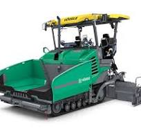
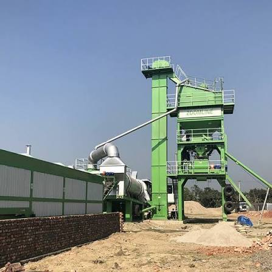

Construction Inspection
Independent inspection and evaluation of construction activities, equipment and project conditions.
Daniel Mulugeta
INDEPENDENT CONSTRUCTION MACHINERY • INSPECTION • EVALUATION AND ASPALT PAVMENT
Independent construction machinery and infrastructure consulting, inspection and evaluation services for informed decisions and successful projects.
Independent Construction & Infrastructure Consulting
We provide independent consulting, technical evaluation, specification preparation, inspection, material and mix design, pavement works, and project evaluation services within the construction and infrastructure sector.
Our role is to help clients make informed and confident decisions about what they are buying, investing in, constructing, and maintaining. Through professional assessment, technical expertise, and practical advice, we provide an independent perspective before important decisions are made.
Our services support clients in evaluating construction projects, equipment, materials, construction activities, technical specifications, and infrastructure works, helping them identify potential risks, understand technical requirements, and determine the most appropriate course of action.
Our Approach
We combine independent judgment, technical knowledge, and practical experience to give clients clear and objective advice. Our goal is not simply to identify problems, but to help clients understand their options and make decisions that are technically sound, practical, and appropriate for their project.
Areas of Service
Independent Technical Consulting
Specification Preparation & Review
Construction Inspection & Quality Checks
Equipment & Technical Evaluation
Material & Mix Design
Pavement Works & Evaluation
Construction Activity Assessment
Project Evaluation & Technical Advisory
Infrastructure Assessment
Practical Recommendations for Construction & Maintenance
Independent advice. Practical solutions. Better decisions.
Helping private and government clients make informed decisions throughout construction and infrastructure projects.
Independent inspection and evaluation of construction activities, equipment and project conditions.
Professional evaluation of construction machinery and equipment to support purchasing and investment decisions.
Reviewing project conditions, requirements and practical considerations before major decisions are made.
Clear recommendations on what should be done, what should be avoided and which options may provide the best value.
Consulting support for roads, asphalt-related projects, heavy equipment and infrastructure development.
Supporting clients during technical evaluations, purchasing considerations and project-related decisions.


Independent professional insight across construction equipment, road works, asphalt operations and infrastructure projects.
Investors, contractors, businesses, equipment buyers and private project owners.
Public institutions and government projects requiring independent technical insight.
Whether you are evaluating equipment, planning a project or need an independent inspection, get in touch with Daniel Mulugeta.
Construction & Infrastructure
Consultant / Inspector